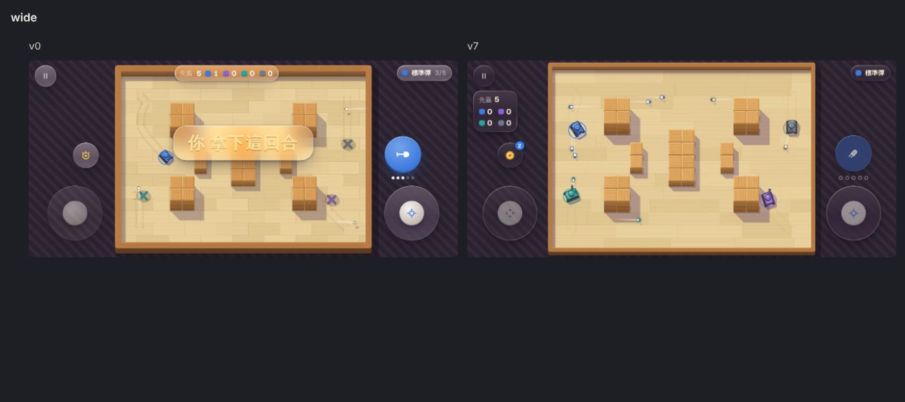
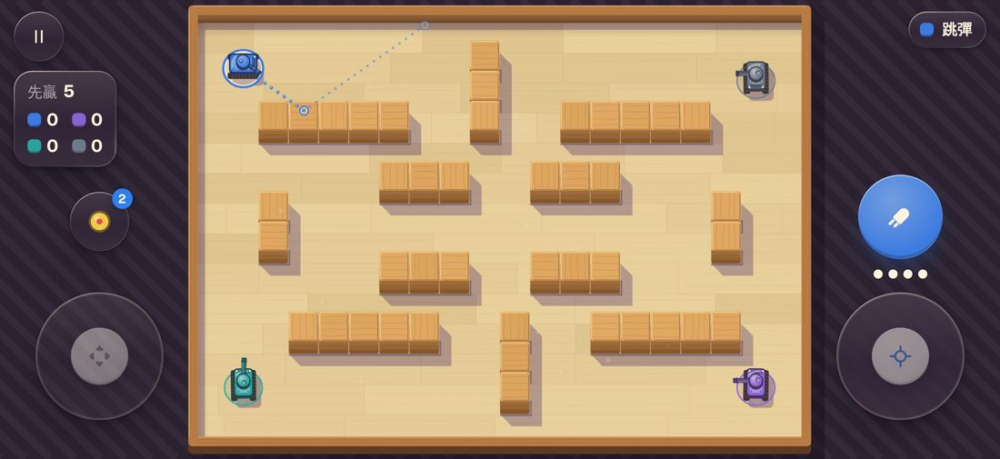
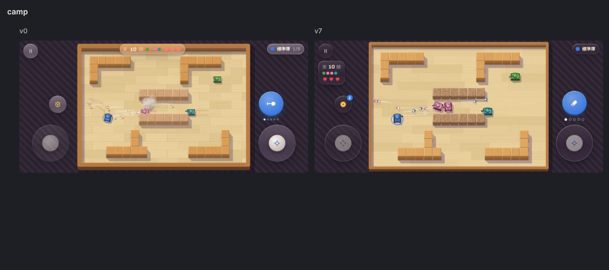
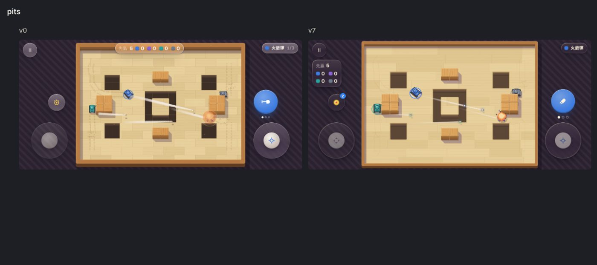
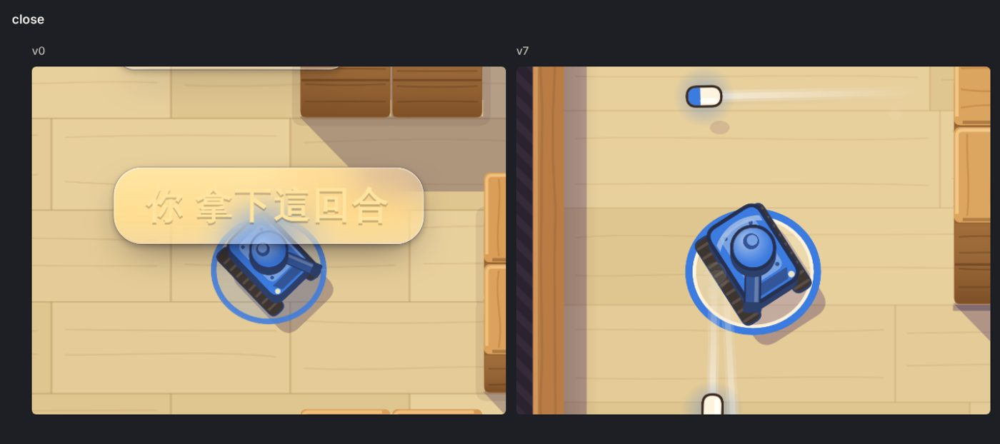
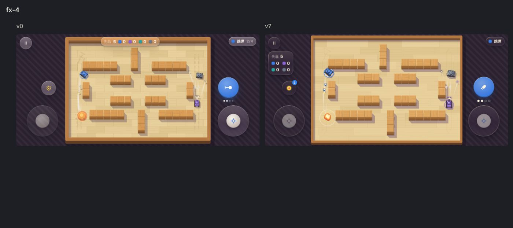
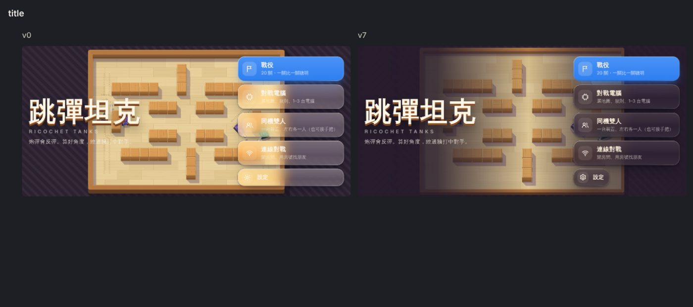
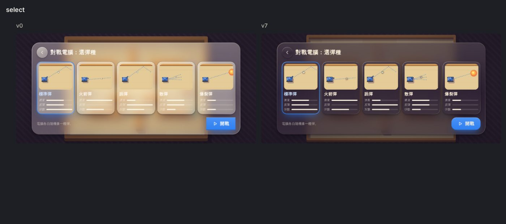
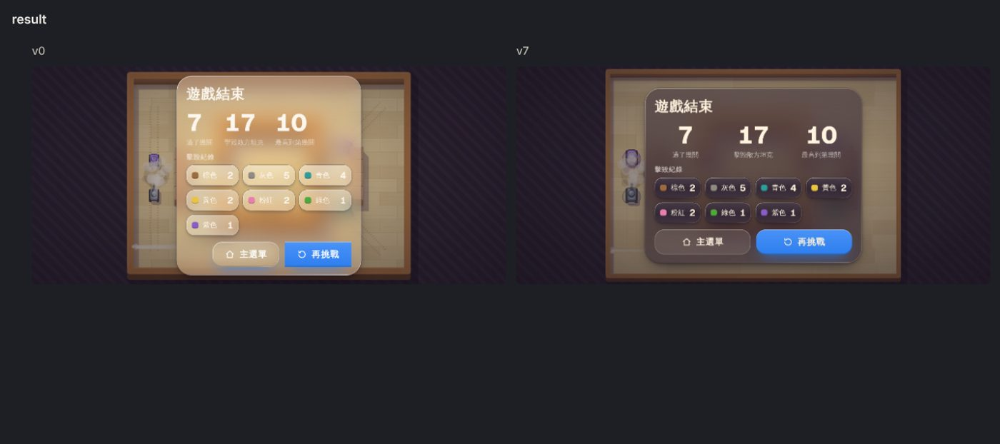

跳彈坦克：美術精緻化 v0 → v7
依 ios-game-art skill：先寫 ART.md（標竿 Brawl Stars、Mini Motorways＋Wii Tanks 的材質色），定格鏡頭截圖，每輪由「沒看過程式碼的獨立審查」對標竿打分，再照最該修的 5 件事改。下面每張左邊是 v0、右邊是 v7（標竿截圖有版權，不放公開站）。
▶︎ 直接試玩（手機橫放）四輪獨立審查（以標竿為 9–10 分）
| 輪次 | 平均 | 審查說差距最大的 | 這輪改了 |
|---|---|---|---|
| v1 | 5.8 | 焦點層次：坦克跟木塊一樣亮，最搶眼的是發射鈕和坑洞 | 坦克放大＋腳下色圈、multiply 投影、坑洞深度、擊毀與反彈特效、煙尾 |
| v4 | 6.2 | 主角存在感（坦克 21 pt）、打擊回饋太弱 | 場地放大（木框變薄、狀態卡搬到左側）、敵我色圈分開、白閃＋震屏 |
| v5 | 6.4 | 炮彈太小看不到、操作鈕比坦克搶眼、擊毀沒打擊感 | 搖桿頭閒置半透明、炮彈加大＋彈頭塗發射者顏色、擊毀特效重做、軟木塊變暗 |
| v6 | 6.0 | （v6 自己引入「木塊旁凸出的陰影耳朵」）焦點放錯地方 | 修耳朵、瞄準虛線蓋在木塊上＋反彈點圈、炮彈發射者色光暈、火球白熱核心、履帶痕降噪 → v7 |
已經進入平台期（審查之間落差約 ±0.4）。一直拉不近的是「坦克在畫面上的份量」：這個玩法要看全場算反彈，坦克上限約 22–26 pt。要再往上要換做法（例如場地格數變少、或改成立體模型），是美術方向的決定。
遊戲中（全景）

瞄準虛線（v7）

戰役（第 10 關）

坑洞地圖

局部放大

擊毀瞬間

標題／選彈種／結算


